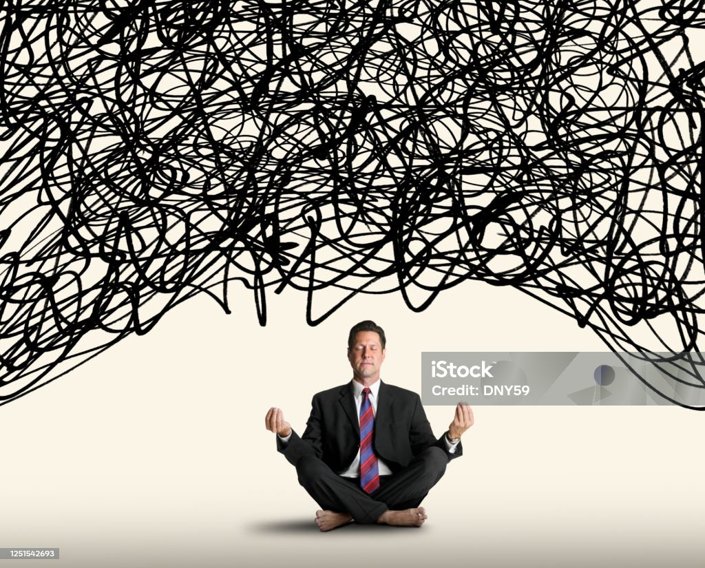

Different types of ways to manage stress for a balanced well-being
Stress Management
Stress is a normal reaction to everyday pressures, but can become unhealthy when it upsets your day functioning. Stress involves changes affecting nearly every system of the body, influencing how people feel and behave. By causing mind body changes, stress contributes directly to the mind and then brain which the affects mental and physical health, reducing quality of life There are many symtoms of having stress, these symtoms are negative which includes physical and emotional.
Symotoms can include:
- High blood pressure
- Difficulty sleeping
- Chest pain
- Depression
- Anxiety
- Weak immune system
Meditation Benefits
Meditation offers a range of benefits for the mind, body and overall for the healthy well-being. One of the biggest most known advantage about miditation is that to helps to reduce the stress that someone may have. As meditation calms the body down, and makes the body and the person more relive, which also develops a sense of inner peace and helps with daily challeges that people deal with everyday.
Meditation can lower blood pressure, improve heart health and boost your immune system aswell as can have a better sleep if you are stuggling with sleep at night. With meditation it helps with the brain and mkes a effective practice for any pain conditions that the person is having.
Meditation can also help with medical conditions, this is becuase when someone has a medical issue they usually stress, where the user can do some meditation which can calm the body down and relax. Talking with the doctor about stress can also help.
walk and meditate: meditating while walking is good for the body as its a healthy way to relax, and spend time on yourself to release the stress that the user my be challenging in their life.
Music: In the process of Miditation people usually like listening to music, as it changes the direction of the mind to somthing else. And can keep you busy for a while so the user doesn't think about the anxiety or depression that the juser may have or going through.
Yoga
The benefits of doing yoga can improve mental, physical, emotional well-being. With yoga it helps to relax the body and mind, there are benefits to yoga for anixety, depression and stress relief.
Increase relaxation: With doing yoga poses and doing breathing exercises can help the body realese the tense that is built due to the stress. By doing some yoga poses can realse the stress that the user maybe having which can reduce the physical pain.
Better sleep: Yoga can help the user with better sleep, this is so with Yoga the user tends to feel relaxed after some yoga has been done this is becuase it realese the stress level to low, which can improve the sleeping quality. yoga before bed can help with sleeping if users are struggling to sleep at night.
How emotions impact the immune system
Negative emotions, such as sadness and anger and the release of stress gives an imact on the immune system with all these emotions that the user is having can have a big impact and weaken the body's immune system. ways to improve your emotional health for stronger immune system:
- Healthy diet: A balanced diet with vitamins and minerals can support the immune system. Foods like fish, nuts, and seeds benefit the brain and the immune system.
- Social connections: Strong social support and friendships can improve mental health and boost a positive immune system. Engaging in social interactions can reduce stress and help maintain a healthy immune system.
- Sleep: Sleep is essential for both mental health and the immune system. Poor sleep can lead to increased stress and anxiety, weakening the immune system. Creating a sleep routine can help maintain the immune system and improve sleep quality.
Dealing with anxiety and depression
There are many ways when it comes to dealing with anxiety and depression, there are many solutions that people can do to come out of it. Anxiety does affect your everyday life, which comes in the way of your daily productivity thats needs to be done each day. below are tips and tricks to do if you feel anxiety or depression.
- Take a time-out: Practice yoga, listen to music, get a massage which can clear your mind from the anxiety
- Eat well-balanced meals: Don't skip any meals, the user needs to keep healthy, with energy boosting, were the user should keep some type of snack with them at all times.
- Limit Alcohol: The user shouldn't drink to much as it gives big impact on there health and body.
- Exercise: With doing max 10 minutes of exercise daily can help the health maintain, so that the anxiety and depression can slowly go, and the user can be normal.
How can Social media impact with well-being?
There are bad impacts on social media with well-being, which can cause alot stress to young children, to adults on social media for example TikTok, when the user is scolling over the reels the user won't know how long they have been scrolling, this is becuase TikTok has removed the top bar where it shows the time, so that the users spend half their time or day on the application. However this is very bad for your well-being, and with this you can also get stressed.
In the high of cyberbullying, most bullying that happens to children happens from social media, where young children are messaging strangers and telling them about their personal life or personal information that shouldn't be told to anyone but however the user wouldn't even know that they just gave their personal information to someone dangrous or can do something harmful.
With power of social media people more tend to be more depressed, anxiety or stressed this becuase of the look or do that the user does. The users see how others have luxurious, and were the user who is looking at it would also want it, and at this point you can get depressed where you cant afford the product, or may get anxiety.